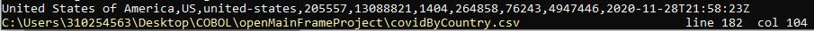
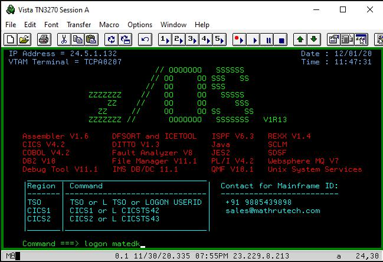
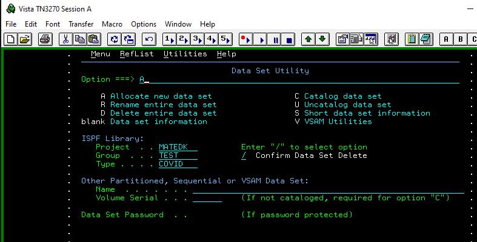
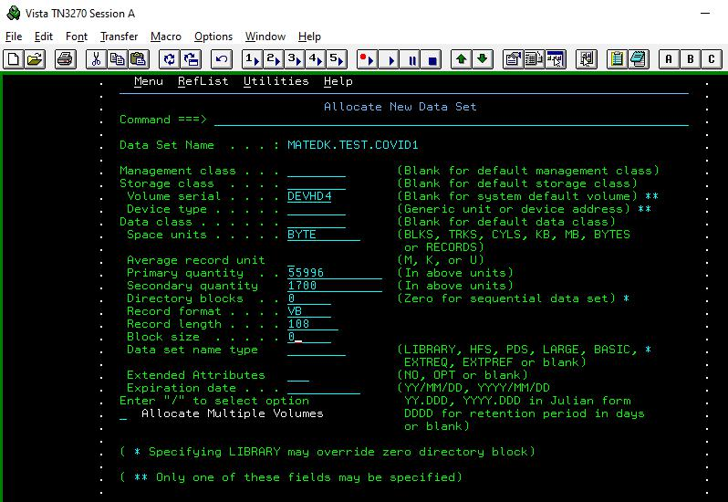
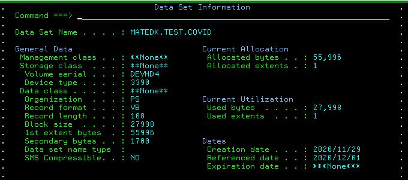
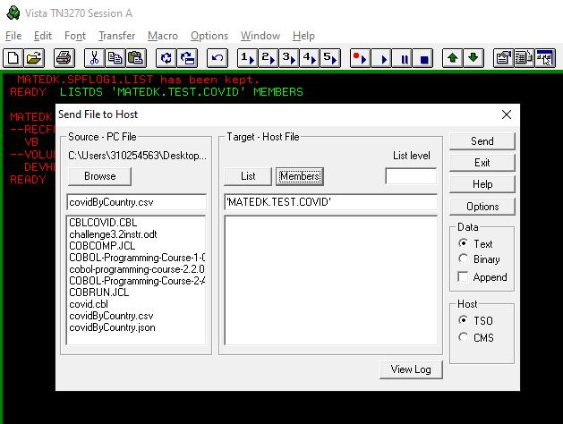

...
This is Simple solution to OpenMainframe Advanced Challenge3.2 using only ISPF and Mainframe COBOL (non-Zowe solution)
The details of this project can be found at https://github.com/openmainframeproject/cobol-programming-course . A most elegant solution using Typescript to automate json to csv conversion + the Zowe API Visual Studio plugin to access the IBM sponsored mainframe - by the code master/challenger here https://medium.com/@jessielaine.punongbayan/solution-covid-19-reports-cobol-challenge-6c509579e3fe
Zowe does a very nice job bringing the VS IDE experience to z/OS mainfraime COBOL. IBM made free mainframe access availble for the 'COBOL Programming with VSCode' challenge. The access included a Zowe interface for working through the program with VSCode. Very nice however only availble on a limited basis.
If like me, you are renting $50/mo access from a commercial mainframe provider, the Zowe interface is generally not available. No problem! Here I show a simple solution to this challenge using only ISPF and COBOL from a standard mainframe access provider.
Step 1: As instructed, Use the API: https://api.covid19api.com/summary. To extract the JSON file.
Step 2: Convert JSON to (comma delimited) CSV format using the conversion method of your choice. (HINT: There are several online converters available)
Step 3: Using your favorite cmd line editor, scroll through the CSV and determine the max record length in characters. This is an important detail for the next step.
Example: My CSV shows United States of America with the longest record at 104 characters.

Step 4: Logon to the Mainframe.
Example logon screen.

Step 5: Use the ISPF Data Set Utility to create a PDS as seen below, which will receive the CVS File.

Set space units to byte, Record Format to VB, Record Length to max record length in chars + 4 (for my example 104 + 4) and Block Size 0.
Example:

New Data Set Created.
Example:

Step 6: Use the TSO transfer utility to copy the CSV to the new data set. Verify the contents.

Example: Content of CSV file transferred to USERID.TEST.COVID.
...
*-----------------------
IDENTIFICATION DIVISION.
*------------------------
* My 'simple answer to Openmainframe challenge 3.2
* Using data set utility first create a PDS with 'V'ariable
* record length. Then transfer the cvs file to the VB data set.
* It does not work if for a FB data set. (because of uneven record length)
*-----------------------
PROGRAM-ID. CBLCOVID
AUTHOR. J_MAC.
*--------------------
ENVIRONMENT DIVISION.
*--------------------
INPUT-OUTPUT SECTION.
FILE-CONTROL.
SELECT IN001 ASSIGN TO COVIDIN
ORGANIZATION IS SEQUENTIAL
ACCESS MODE IS SEQUENTIAL.
*-------------
DATA DIVISION.
*-------------
FILE SECTION.
FD IN001 RECORDING MODE V.
01 COVID-REC-FIELDS PIC X(104).
*
WORKING-STORAGE SECTION.
01 UNSTRING-COVID-RECORDS.
05 UCR-COUNTRY PIC X(50).
05 UCR-COUNTRY-CODE PIC X(4).
05 UCR-SLUG PIC X(50).
05 UCR-NEW-CNFRM PIC 9(5).
05 UCR-TOT-CNFRM PIC 9(8).
05 UCR-NEW-DEATH PIC 9(5).
05 UCR-TOT-DEATH PIC 9(5).
05 UCR-NEW-RECVR PIC 9(5).
05 UCR-TOT-RECVR PIC 9(8).
05 UCR-TIMESTAMP PIC X(25).
01 WS-ASTER PIC X(80) VALUE ALL '*'.
01 NUMBER-DISPLAY-FORMAT.
05 NEW-CNFRM PIC ZZZ,999.
05 TOT-CNFRM PIC ZZ,ZZZ,999.
05 NEW-DEATH PIC ZZZ,999.
05 TOT-DEATH PIC ZZZ,999.
05 NEW-RECVR PIC ZZZ,999.
05 TOT-RECVR PIC ZZ,ZZZ,999.
01 FLAGS.
05 LASTREC PIC X VALUE SPACE.
*------------------
PROCEDURE DIVISION.
*------------------
MAIN.
OPEN INPUT IN001.
PERFORM UNTIL LASTREC = 'Y'
PERFORM READ-RECORD
PERFORM DISPLAY-RECORD
END-PERFORM.
CLOSE IN001
STOP RUN.
READ-RECORD.
READ IN001
AT END MOVE 'Y' TO LASTREC
END-READ.
DISPLAY-RECORD.
UNSTRING COVID-REC-FIELDS DELIMITED BY ','
INTO UCR-COUNTRY
UCR-COUNTRY-CODE
UCR-SLUG
UCR-NEW-CNFRM
UCR-TOT-CNFRM
UCR-NEW-DEATH
UCR-TOT-DEATH
UCR-NEW-RECVR
UCR-TOT-RECVR
UCR-TIMESTAMP.
**** // DISPLAY-FRIENDLY NUMBER FORMAT
MOVE UCR-NEW-CNFRM TO NEW-CNFRM
MOVE UCR-TOT-CNFRM TO TOT-CNFRM
MOVE UCR-NEW-DEATH TO NEW-DEATH
MOVE UCR-TOT-DEATH TO TOT-DEATH
MOVE UCR-NEW-RECVR TO NEW-RECVR
MOVE UCR-TOT-RECVR TO TOT-RECVR
DISPLAY 'DATE: ' UCR-TIMESTAMP(1:10)
DISPLAY 'TIME: ' UCR-TIMESTAMP(12:8)
DISPLAY 'COUNTRY: ' UCR-COUNTRY
DISPLAY 'COUNTRY CODE: ' UCR-COUNTRY-CODE
DISPLAY 'SLUG: ' UCR-SLUG
DISPLAY 'NEW CONFIRMED CASES: ' NEW-CNFRM
DISPLAY 'TOTAL CONFIRMED CASES: ' TOT-CNFRM
DISPLAY 'NEW DEATHS: ' NEW-DEATH
DISPLAY 'TOTAL DEATHS: ' TOT-DEATH
DISPLAY 'NEW RECOVERIES: ' NEW-RECVR
DISPLAY 'TOTAL RECOVERIES: ' TOT-RECVR
DISPLAY WS-ASTER.
//MATEDKD JOB MSGLEVEL=(1,1),NOTIFY=&SYSUID
//PLIB JCLLIB ORDER=(MATE1.PROCLIB)
//*
//* COMPILE A COBOL PROGRAM
//*
//CL EXEC COBOLCL,
// COPYLIB=MATEDK.COPYLIB, <= COPYBOOK LIBRARY
// LOADLIB=MATEDK.LOADLIB, <= LOAD LIBRARY
// SRCLIB=MATEDK.COBOL.SRCLIB, <= SOURCE LIBRARY
// MEMBER=CBLCOVID <= SOURCE MEMBER
//MATEDKW JOB MSGLEVEL=(1,1),NOTIFY=&SYSUID
//*
//* RUN A COBOL PROGRAM
//*
//STEP01 EXEC PGM=CBLCOVID
//STEPLIB DD DSN=MATEDK.LOADLIB,DISP=SHR
//COVIDIN DD DSN=MATEDK.TEST.COVID,DISP=SHR
//PRTLINE DD SYSOUT=*
//SYSOUT DD SYSOUT=*
********************************************************************************
DATE: 2020-11-28
TIME: 21:58:23
COUNTRY: Bolivia
COUNTRY CODE: BO
SLUG: bolivia
NEW CONFIRMED CASES: 104
TOTAL CONFIRMED CASES: 144,494
NEW DEATHS: 004
TOTAL DEATHS: 8,943
NEW RECOVERIES: 330
TOTAL RECOVERIES: 121,050
********************************************************************************